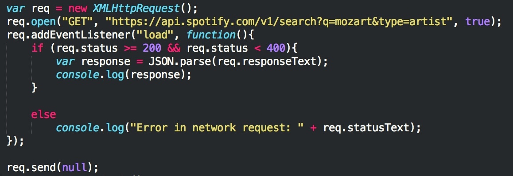

Spotify API Basics
What does it do?
Spotify's API allows applications to retrieve data from their music catalog, as well as manage users' playlists and saved music libraries. The API essentially consists of a bunch of endpoints that when called, will return the requested information, like albums, artists, songs, top songs, and much more. Some information, like retrieving user profiles, getting currently featured playlists, or getting a list of new releases, requires a server-side secret key exchange (a bit more on this below), so we'll be focusing on retrieving data from endpoints that don't require this exchange.
Spotify Authentication and API Endpoints
As I mentioned above, some requests to certain Spotify API endpoints require authorization, typically when the request involves fetching user information. Since we'll only be retrieving data like artists, albums, and songs in this guide, we don't need to exchange client credentials with their servers. Although we are accessing Spotify's API without an access token, the rate limit should be adequate for normal use and especially for the purposes of this guide. With that in mind, a complete list of Spotify's API endpoints can be found here.
Our first request
To make our first request, we just need the base URL:https://api.spotify.com
All of Spotify's endpoints branch from the base URL.
Let's start by making a call to the search endpoint: GET https://api.spotify.com/v1/search
This endpoint requires two parameters:
- q: the search query's keywords
- type: a comma separated list of types to search. The valid types are album, artist, playlist, and track
https://api.spotify.com/v1/search?q=mozart&type=artist
Now that we have the request properly formatted, let's make a call to the Spotify API in JavaScript and see what we get back!
Making a call to the Spotify API in JavaScript
The call is going to look something like this in JavaScript:
